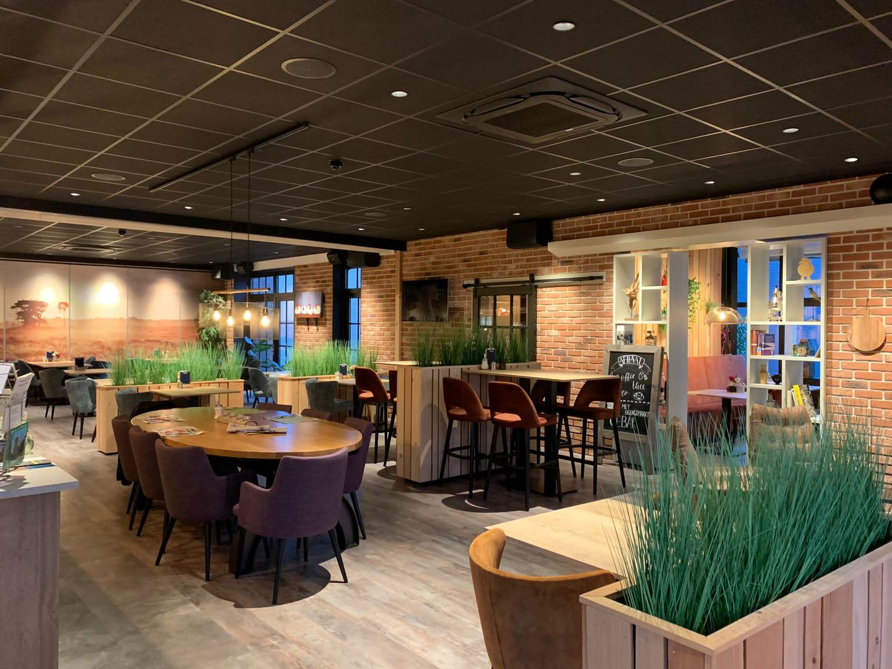
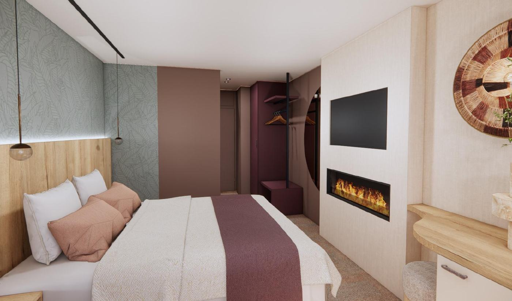
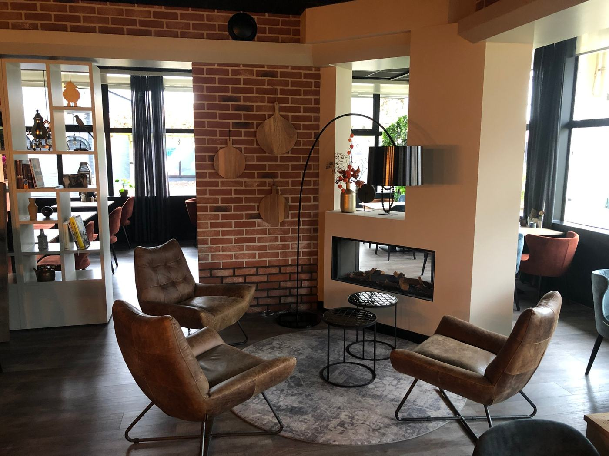

Welkom in Hotel Kuik, aan de Brink in Ruinen
Tegenover de oude Mariakerk, midden in Ruinen en vlak bij het Dwingelderveld. Comfortabele kamers, een keuken met streekproducten en een terras met uitzicht over de Brink.
Kamer boeken

Overnachten met halfpension
Elke ochtend een uitgebreid ontbijt, elke avond een 3-gangendiner. Overdag wandelt of fietst u door bos en heide.
- 24 tot 27 decemberKerst aan de Brinkvanaf € 1802 nachten met ontbijt en elke avond een 3-gangendiner
- Warme Wintertruivanaf € 180
- Vrolijk Voorjaarvanaf € 185
- Zonnig Zomervanaf € 190
Per persoon voor 2 nachten op basis van halfpension.
Alle arrangementen
Buffetten voor uw feest
Voor verjaardagen, jubilea en uitvaarten. Royaal, met streekproducten, en steeds bijgevuld.
- Meest gekozenKoud en warm buffetvanaf € 29,50Salades, beenham, kippendij met pindasaus, gegratineerde aardappels
- Meest gekozenStamppotbuffetvanaf € 27,50Boerenkool, zuurkool, hutspot, rookworst en huisgemaakte gehaktballetjes
- Drentse koffietafelvanaf € 14,50Brood, beleg, soep en koffie. Ook bij een uitvaart
- High tea of brunch€ 22,50
- Dessertbuffetvanaf € 10,00

Koffie, lunch of een borrel
Het café is voor iedereen open. Bij de open haard, aan de bar of op het terras met uitzicht over de Brink.
Lunch- en dinerkaart